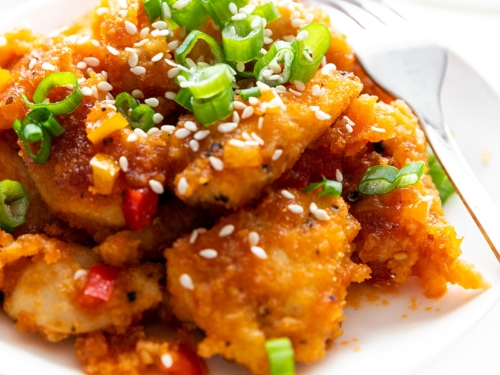

Sweet and sour chicken

About sweet and sour chicken
There are many different styles of sweet and sour dishes that date back centuries from China, as well as the Philippines and Korea.
How it came to be that it’s now a rather orange sauce in the UK though is anyone’s guess! As it’s evolved, we are more familiar with a bright, sticky sauce that was ranked #4 in a survey of Brits’ favourite takeaways during lockdown. This report suggests that the origins may have come from Shanghai and interestingly, the sauce was then black in colour.
This is my take on Sweet and Sour Chicken, focused on flavour, convenience, cost, and as always, family friendliness.
Ingredients you will need
- Chicken breasts – I cut these into bite sized pieces. You can use boneless, skinless chicken thighs if you prefer, they may take a little longer to cook.
- Light soy – you can use dark soy if it’s all you have, but the colour of the finished sauce will be very different. The flavour may also be quite salty.
- Garlic – 4 cloves or 4 teaspoons of the lazy kind. You can also use paste.
- Ginger – 2 inches or 2 teaspoons of the lazy kind. You can also use paste if you prefer, or take out a small portion of fresh from the freezer and grate into the pot.
- White wine vinegar – not white vinegar, or malt vinegar, these are very different!
- Dark brown sugar – this does need to be dark brown to give that rich flavour.
- Peppers – you can use whichever colour you prefer.
- Tinned pineapple (in JUICE) – make sure the pineapple is in chunks. If you buy the rings, you can just cut them up. You’ll be using the juice before you use the fruit itself in the cooking process.
- Optional – Chilli flakes for a bit of heat if you like that, and a squeeze of lime at the end for extra zing.